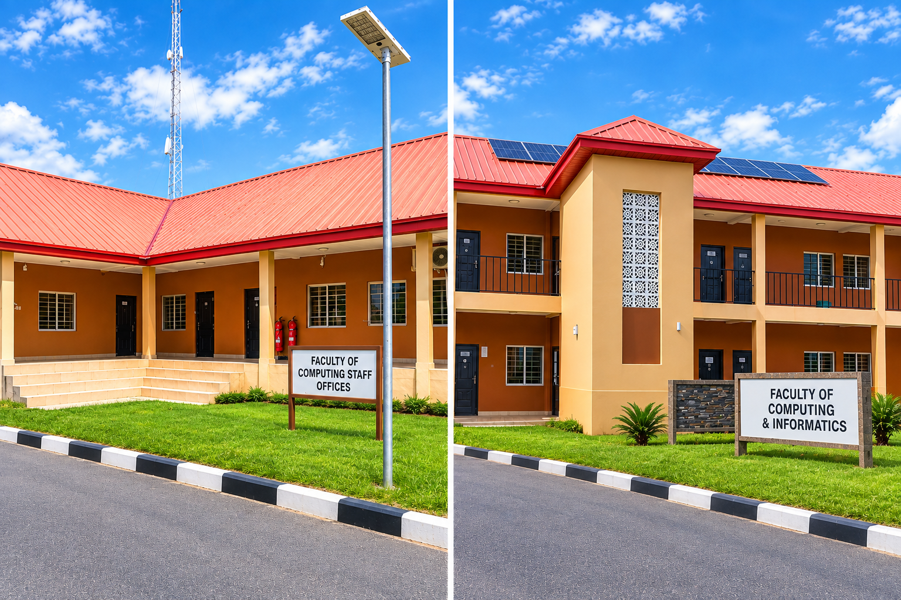

FCI is one of the faculties of Confluence University of Science and Technology (CUSTECH), Osara, Kogi State — established to train computing professionals for Nigeria's growing digital economy.
Confluence University of Science and Technology (CUSTECH) is a state technical university located in Osara, Kogi State, established in 2020. The university runs programmes across several faculties, including the Faculty of Computing and Informatics, alongside faculties of Science, Engineering, Environmental Sciences, Science & Technology Education, and Management & Social Sciences.
Pictured above: the Faculty's entrance signage on the CUSTECH Osara campus.
The institution is led by a Vice-Chancellor supported by a Registrar and other principal officers. Visit custech.edu.ng for official announcements.
FCI trains students across five departments — Computer Science, Cyber Security, Software Engineering, Information Technology, and Library & Information Science. The Faculty combines theory with hands-on laboratory work so graduates leave ready for industry, research, or further study.
Use the menu at the top of every page, or these shortcuts, to find what you need.
What each department teaches and who leads it.
Faculty, advisers, Technologists, reps and officials.
The Faculty building and its laboratories.
Documentation requirements and dos & don'ts.